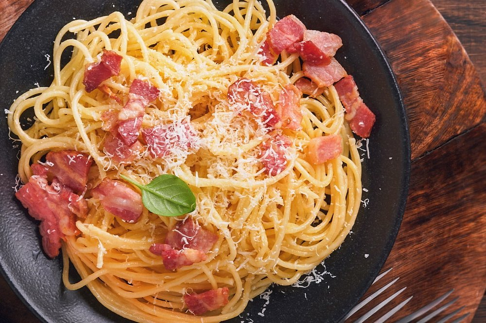
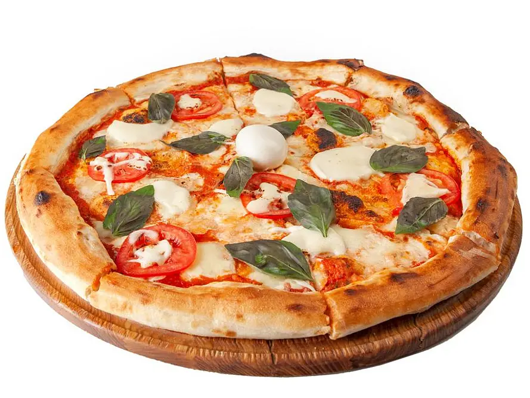
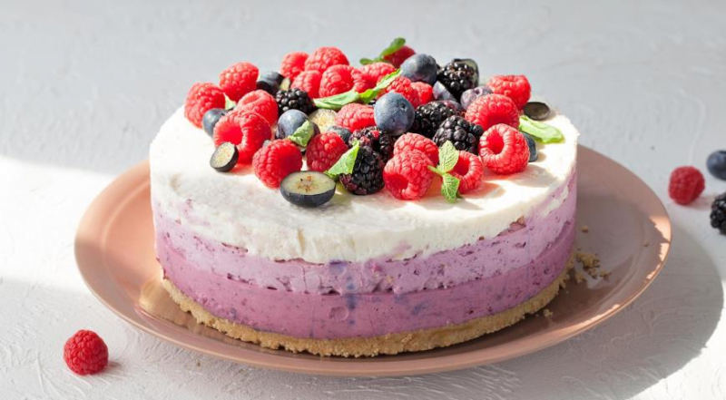

«Зберігайте улюблені рецепти, залишайте відгуки та знаходьте кулінарних однодумців.»

Густий, шовковистий соус створюється без жодних вершків — лише за рахунок жовтків, витриманого сиру та гарячої води від пасти.

Традиційне пухке тісто, соковитий томатний соус, свіжа моцарела та ароматичні листочки базиліку.

Ніжний кремовий шар на основі вершкового сиру із пісочною основою та яскравим соусом зі свіжих ягід.